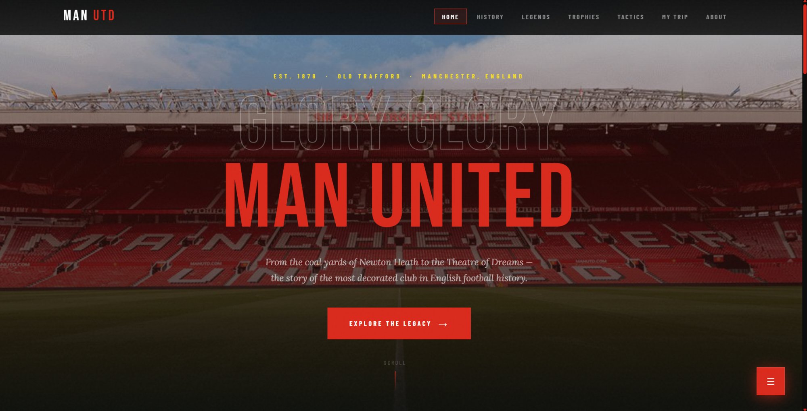
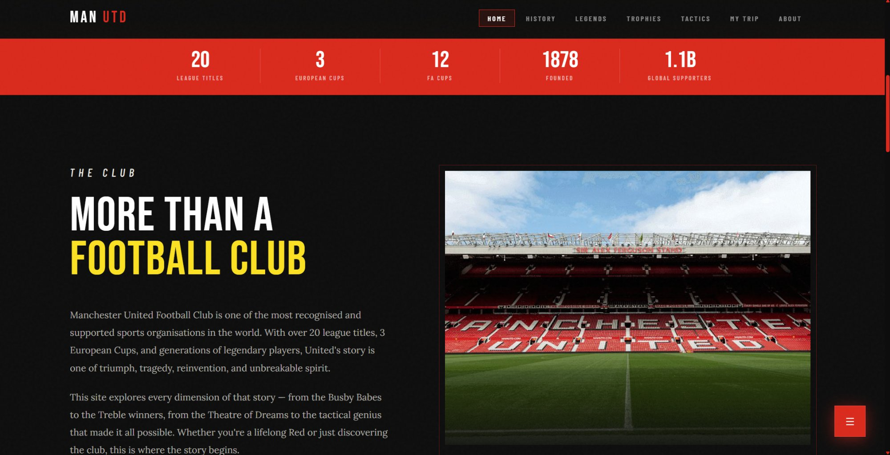
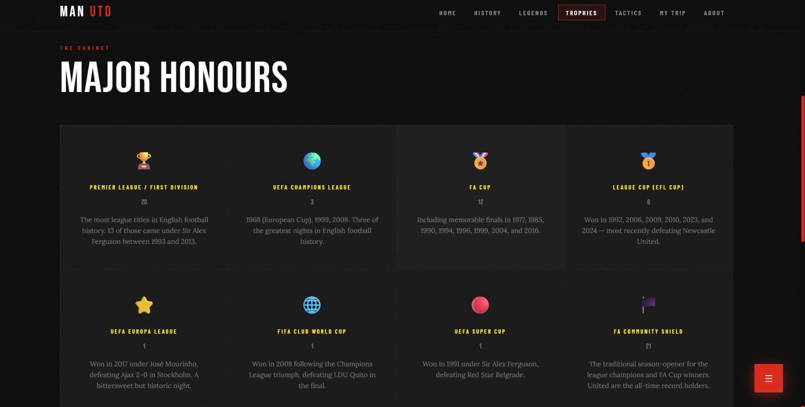
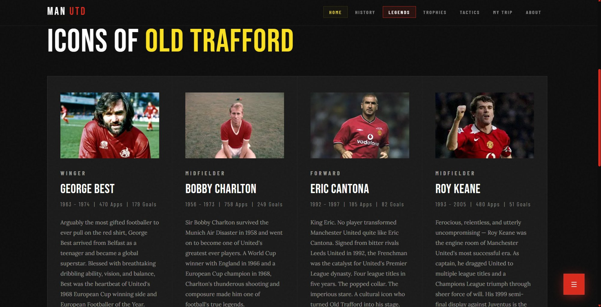

A fan website covering the history, legends, trophies, and spirit of the most decorated club in English football.
Old Trafford photography spanning the full screen with "GLORY GLORY MAN UNITED" typography and red CTA.

Red stats bar (20 League Titles, 3 European Cups, 12 FA Cups), club overview, and stadium photography.

Full trophy cabinet — Premier League, Champions League, FA Cup, League Cup, Europa League, and more.

Legend profiles — George Best, Bobby Charlton, Eric Cantona, Roy Keane — with real photos and career bios.